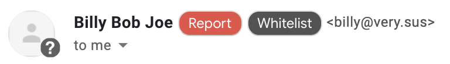

Aspys
Aspys
Aspys
Aspys
Thank you for installing Aspys.
Our team of high schoolers developed this application to help organizations and individuals identify phishing emails and suspicious sites.
Since this is your first install, this page will guide you through the core features and setup options.
These are still under construction.
Plans are to indicate the credibility of the current site.
In Gmail, Aspys will display a warning icon if the email address of the sender is from somewhere unrecognized.
You can report or whitelist the email.
Rest assured, Aspys does NOT save or read any contents of your emails unless you decide to report them, in which the entire email contents are sent.
The next page will redirect you to the options page.